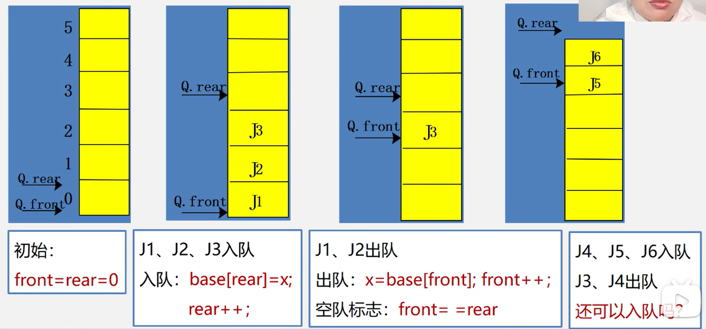
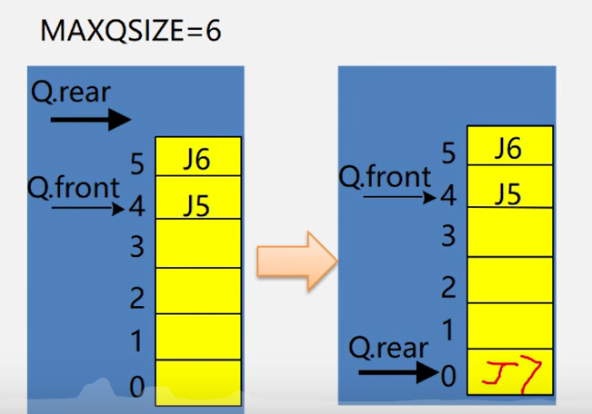
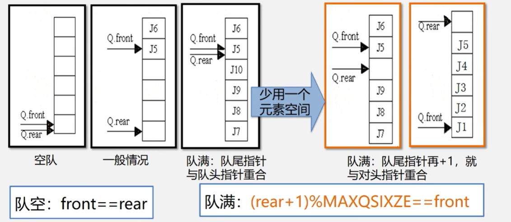
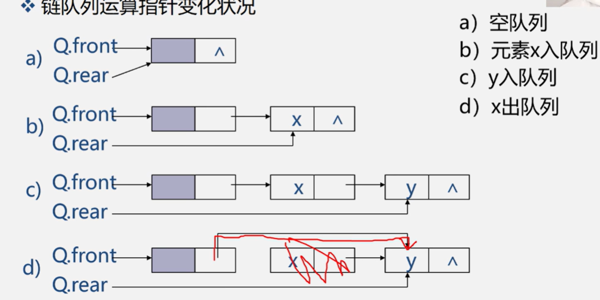

队列的表示和操作的实现
队列的顺序表示和实现
- 队列的顺序表示
#define MAXQSIZE 100//最大队列长度
Typedef struct{
QElemType *base;//初始化的动态分配存储空间
int front;//头指针，若队列不空，指向队列头元素
int rear;//尾指针，若队列不空，指向队列尾元素的下一个位置
}SqQueue;- 队列的顺序实现

rear=MAXQSIZE时，发生溢出：
- front=0：真溢出
- front!=0：假溢出
* 处理：将队空间设想成循环的表，当rear为maxqsize时，若向量的开始端空着，又可从头使用空着的空间
* base[0]接在base[MAXQSIZE-1]之后，若rear+1==M，则令rear=0
* 实现方法：利用模（mod）运算
* 插入元素：
Q.base[Q.rear]=x;Q.rear=(Q.rear+1)%MAXQSIZE;
队空、队满：front==rear
- 解决判断方法：少用一个元素空间

- 循环队列的操作
- 队列 的初始化
Status InitQueue(SqQueue &Q){
Q.base=new QElemType[MAXQSIZE]//分配数组空间0~MAXQSIZE
if(!Q.base)exit(OVERFLOW);//存储分配失败
Q.front=Q.rear=0;//头指针尾指针置为0，队列为空
return OK;
}- * 求队列的长度
int QueueLength(SqQueue Q){
return((Q.rear-Q.front+MAXQSIZE)%MAXQSIZE);
}- 循环队列入队
Status EnQueue(SqQueue&Q,QElemType e){
if((Q.rear+1)%MAXQSIZE==Q.front)return ERROR;//队满
Q.base[Q.rear]=e;//新元素加入队尾
Q.rear=(Q.rear+1)%MAXQSIZE;//尾指针后移
return OK;
}- 循环队列出队
Status DeQueue(SqQueue&Q,QElemType&e){
if(Q.front==Q.rear)return ERROR;//队空
e=Q.base[Q.front];//保存队头元素
Q.front=(Q.front+1)%MAXQSIZE;//队头指针+1
return OK;
}- 取队头元素
SElemType GetHead(SqQueue Q){
if(Q.front!=Q.rear){//队列不为空
return Q.base[Q.front];//返回队头指针元素的值，队头指针不变
}
}队列的链式表示和实现
若用户无法估计所有队列的长度，则宜采用链队列
- 链队列的类型定义
#define MAXQSIZE 100//最大队列长度
typedef struct Qnode{
QElemType data;
struct Qnode *next;
}QNode,*QueuePtr;
typedef struct{
QueuePtr front;//队头指针
QueuePtr rear;//队尾指针
}LinkQueue;
- 链队列的操作
- 链队列初始化
Status InitQueue(LinkQueue&Q){
Q.front=Q.rear=(QueuePtr)malloc(sizeof(QNode));
if(!Q.front)exit(OVERRFLOW);
Q.front->next=NULL;
return OK;
}- 销毁链队列
Status DestroyQueue(LinkQueue&Q){
while(Q.front){
p.Q.front->next;delete Q.front;Q.front;Q.front=p;
}
return OK;
}- 将元素e入队
Statue EnQueue(LinkQueue&Q,QElemType e){
p=(QueuePtr)malloc(sizeof(QNode));
if(!p)exit(OVERFLOW);
p->data=e;p->next=NULL;
Q.rear->next=p;
Q.rear=p;
return OK;
}- 链队列出队
Status DeQueue(LinkQueue&Q,QElemType&e){
if(Q.front==Q.rear)return ERROR;
p=Q.front->next;
e=p->data;
Q.front->next=p->next;
if(Q.rear==p)Q.rear=Q.front;
delete p;
return OK;
}- 求链队列的队头元素
Status GetHead(LinkQueue Q,QElemType &e){
if(Q.front==Q.rear)return ERROR;
e=Q.front->next->data;
return OK;
}